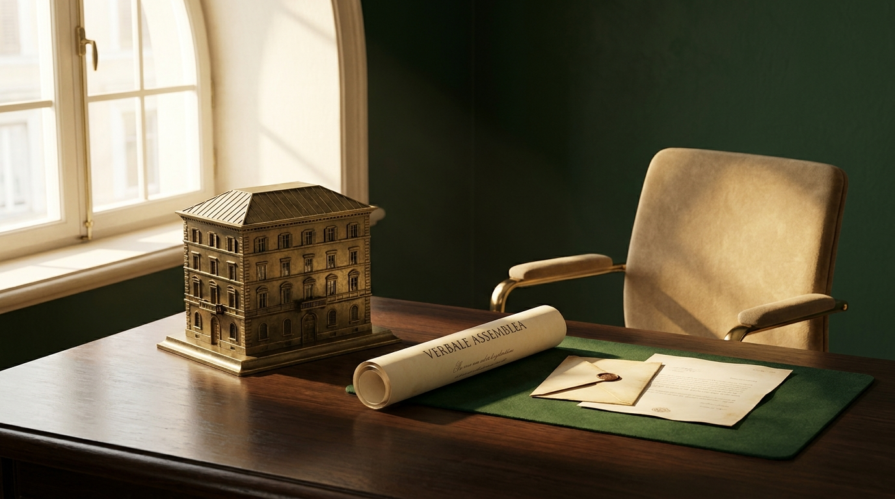

Mancata convocazione in assemblea: chi può impugnare la delibera
Un condomino regolarmente convocato può chiedere l'annullamento dell'assemblea perché un altro non ha ricevuto l'avviso? La giurisprudenza risponde di no: il vizio di convocazione tutela solo chi lo ha subìto. La delibera è annullabile, non nulla, e va impugnata nei trenta giorni. Vediamo regole, termini e legittimazione, con un cenno alle maggioranze sulle tabelle millesimali.

Il caso
La questione è ricorrente: durante un'assemblea condominiale viene approvata una delibera; uno dei partecipanti scopre che un altro condomino non era stato convocato e prova a far cadere la decisione su questa base.
L'orientamento consolidato della Cassazione esclude questa possibilità. Il difetto di convocazione è un vizio che protegge la sfera giuridica del singolo condomino pretermesso (cioè non avvisato), non quella degli altri partecipanti. Chi è stato regolarmente convocato non può servirsi dell'omissione altrui per ottenere l'annullamento.
Inquadramento normativo
La convocazione dell'assemblea è disciplinata dall'art. 66 disp. att. c.c., che impone l'avviso a ciascun condomino almeno cinque giorni prima della prima convocazione. La norma è espressa: l'omessa, tardiva o incompleta convocazione "rende annullabile la deliberazione su istanza dei condomini assenti perché non ritualmente convocati".
Il legislatore qualifica quindi il vizio come causa di annullabilità, non di nullità, e ne riserva la denuncia ai soli soggetti che hanno subìto l'omissione. È un dato testuale, non una semplice interpretazione: la legittimazione a impugnare è personale.
Il regime processuale è quello dell'art. 1137 c.c.: il condomino assente, dissenziente o astenuto può chiedere l'annullamento della delibera contraria alla legge o al regolamento entro trenta giorni, termine perentorio. Per gli assenti, il termine decorre dalla comunicazione del verbale; per i presenti, dalla data della deliberazione.
Annullabilità o nullità: la differenza conta
La distinzione non è teorica e incide su chi può agire e in quanto tempo.
La delibera nulla (ad esempio per oggetto impossibile o illecito, o per lesione di diritti individuali) può essere fatta valere da chiunque vi abbia interesse, senza limiti di tempo. La delibera annullabile può essere impugnata solo dai legittimati indicati dall'art. 1137 c.c. e solo entro trenta giorni. Decorso il termine, la decisione si consolida e diventa vincolante per tutti.
Il vizio di convocazione rientra nell'annullabilità. Ne consegue che il condomino non avvisato deve attivarsi rapidamente: trascorsi trenta giorni dalla comunicazione del verbale, perde la possibilità di contestare.
Tabelle millesimali e incarico al tecnico: due maggioranze diverse
Un secondo profilo, spesso confuso in assemblea, riguarda le maggioranze.
Affidare a un tecnico l'incarico di redigere o rivedere le tabelle millesimali è un atto di gestione: richiede la maggioranza ordinaria prevista per le deliberazioni assembleari. Approvare o modificare le tabelle, invece, incide sui criteri di ripartizione delle spese e segue regole più rigorose, fino al consenso unanime quando si tratta di derogare ai criteri legali di proporzionalità (art. 1123 c.c.) o di rettificare valori frutto di errore.
È un errore frequente ritenere che, una volta dato l'incarico, le nuove tabelle siano automaticamente operative: l'incarico al professionista e l'approvazione del documento sono due passaggi distinti, con quorum distinti. Confonderli espone la delibera a impugnazione.
Implicazioni pratiche
Per l'amministratore, la lezione è duplice: curare con rigore la convocazione di tutti i condomini e non sovrapporre l'incarico tecnico all'approvazione delle tabelle.
Per il singolo condomino, il punto è la legittimazione. Chi non è stato convocato dispone di uno strumento efficace ma a tempo. Chi è stato convocato non può appropriarsi del vizio altrui: dovrà individuare un proprio motivo di impugnazione.
Cosa fare in concreto
- Verifica la prova della convocazione: conserva l'avviso e la ricevuta di consegna; in caso di contestazione, l'onere di dimostrare la regolare convocazione grava sul condominio.
- Controlla il dies a quo: se sei assente, il termine di trenta giorni decorre dalla comunicazione del verbale; se eri presente, dalla data della deliberazione.
- Individua la tua legittimazione: il vizio di convocazione è impugnabile solo dal condomino non avvisato; se eri presente, cerca un diverso vizio della delibera.
- Distingui i due quorum sulle tabelle: verifica che l'assemblea abbia deliberato separatamente l'incarico al tecnico e l'eventuale approvazione delle tabelle, ciascuno con la maggioranza corretta.
- Valuta legittimazione e vizi prima di agire: è opportuno esaminare la regolarità del verbale e la propria posizione prima di promuovere l'impugnazione, dato il carattere perentorio del termine.
Ogni condominio ha una storia a sé.
Se gestisci un'amministrazione e vuoi un confronto su una specifica questione condominiale, scrivi allo studio. Ti rispondiamo entro un giorno lavorativo.